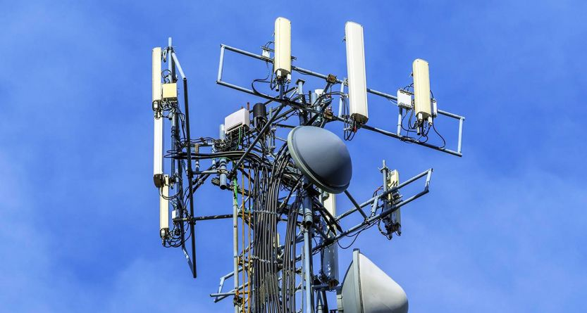

လူတွေလုံးဝအထင်မှားနေကြသော ဖုန်းတာဝါတိုင်နှင့် ကျန်းမာရေးထိခိုက်မှု

Cell phone towers and Health ဆဲလ်ဖုန်းတာဝါတိုင်များနှင့် ကျန်းမာရေး
ကျေးဇူးပြုပြီး၍ တခုလောက်သိပါရစေ၊ တယ်လီဖုန်း တာဝါတိုင်ကို အိမ်နားလေးမှာ ကပ်ထောင်ထားခဲ့ရင် ကလေးရော လူကြီးကိုပါ အန္တရာယ်ရှိနိုင်ပါသလား၊ ကျနော်ကြားဖူးတာက တယ်လီဖုန်းလိုင်းကနေတဆင့် ဦးနှောက် အာရုံကြော ထိခိုက်တယ်လို့ ကြားဖူးပါတယ် ဟုတ်ပါသလား။ ကျနော်တို့ အိမ်နားမှာ တယ်လီဖုန်း တာဝါတိုင် စိုက်ထူဖို့ အစီအစဉ် ရှိလို့ပါ
ဆဲလ်ဖုန်းတာဝါတိုင်တွေကနေ RF waves ဖရီကွင်စီမြင့်တဲ့ ရေဒီယိုလှိုင်းတွေ ထုတ်ပေးနေတယ်။ ၂၂ မိုင်ကနေ ၄၅ မိုင်အထိ ရောက်တယ်။ နီးလေလေ သက်ရောက်မှုများလေလေ။ ဒါပေမဲ့ လူတွေမှာရှိတဲ့ DNA မော်လီကျူးကို မချိုးဖျက်နိုင်လို့ ကင်ဆာမဖြစ်စေနိုင်ပါ။ Wavelength ခေါ်လှိုင်းအလျားကရှည်တယ်။ ၁-၂ လက္မအထိသာကျယ်လို့ ဆဲလ်လေးတခုအပေါ်မှာ မစုနိုင်ပါ။
ဆဲလ်ဖုန်းတွေကနေ ထုတ်နေတဲ့ Radiofrequency energy စွမ်းအင်က Non-ionizing အမျိုးအစားသာဖြစ်တယ်။Wi-Fi ဝိုင်ဖိုင်၊ Bluetooth ဘလူးတုသ်နဲ့ Wireless routers ရောက်ဒါတွေကနေ low-gigahertz ဖရီကွင်စီ ထုတ်ပေးနေတယ်။
RF waves လှိုင်းကနေ လူကိုယ်ကို အပူချိန်မြင့်စေနိုင်တယ်။ ဆဲလ်ဖုန်းတာဝါကနေတော့ ဘယ်လိုမှ မသိသာပါ။လှိုင်းတွေက ရေပြင်ညီအတိုင်းသာသွားတယ်။ အောက်ဘက်ကို နည်းနည်းလေးသာရောက်နိုင်တယ်။
Base station antennas ဌာနချျုပ်မှာသုံးရတာကတော့ မြင့်တယ်။ ဒါလည်းပဲ ရေဒီယိုနဲ့ တီဗွီစတေရှင်တွေထက် နိမ့်တယ်။အိမ်ခေါင်မိုးမှာ ဆဲလ်ဖုန်းတာဝါထောင်ထားပေမဲ့လည်း RF levels ကို FCC safety guidelines လမ်းညွှန်အရသာ လုပ်ရပါမယ်။ အိမ်ထဲမှာ စမ်းလို့ရတဲ့ အင်နာဂျီဟာ အိမ်ပြင်မှာထက် နည်းတယ်။
ဆဲလ်ဖုန်းတာဝါတိုင်ပေါင်း ယူအက်စ်အေမှာ ၃ သိန်း၊ ယူကေနိုင်ငံမှာ ၆ သောင်းရှိတယ်။ နှစ်စဉ် အရေအတွက် တိုးနေတယ်။
အခုထိတော့ ဆဲလ်ဖုန်းကုမ္ပဏီတွေက လူတွေကျန်းမာရေးကို မထိခိုက်ပါလို့ ပြောထားတယ်။ လူတွေကိုသာမက အကောင်တွေအပေါ် ဘယ်လိုဆိုးကျိုးရှိမလဲ လေ့လာမှုတွေလုပ်နေပါတယ်။ စိုးရိမ်မှုကို ထုတ်ပြန်တာတွေလည်း ရှိတယ်။ ၁၉၉၈ ခုတုန်းက ဂျာမဏီပြည်နယ်တခုမှာ စစ်တမ်းတခုထုတ်တယ်။ နွားတွေ နို့ထွက်နည်းစေတယ်တဲ့။
၂ဝဝရ မှာ လူတွေကိုလေ့လာမှုစစ်တမ်းတခု Kempten West ထုတ်တယ်။ သွေးထဲက seratonin စီရာတိုနင်နဲ့ melatonin မယ်လာတိုနင် ဟော်မုန်းကို စမ်းတယ်။ အဲတာတွေက လူတွေရဲ့ စိတ်မူ၊ အိပ်စက်ခြင်း၊ ရောဂါပြီးစနစ်တွေနဲ့ ဆိုင်တယ်။ ဆဲလူးလားတာဝါတွေမစိုက်ထူမီ ၅ လနဲ့ စိုက်ပြီး ၅ လ ကိုနှိုင်းယှဉ်တယ်။ မီတာ ၃ဝဝ စက်ဝိုင်းထဲမှာ နေထိုင်သူပေါင်း ၂၅ ယောက်မှာ သိသာတဲ့ပြောင်းလဲမှုရှိတယ်လို့ဆိုပါတယ်။
နောက် ဂျာမန်လေ့လာမှုတခုမှာ မိုဘိုင်းဖုန်းတာဝါအနား ၁ဝ နှစ်ကြာနေထိုင်ခဲ့သူ လူဦးရေ ၁ဝဝဝ ကို ၅ နှစ်တာ လေ့လာမှုအရ မီတာ ၄ဝဝ အတွင်းနေသူတွေက ဒိထက်ဝေးဝေးနေသူတွေထက် ကင်ဆာဖြစ်နှုန်းပိုတယ်လို့ ဆိုပါတယ်။
ချုပ်ပါရစေ။ လေ့လာမှုတွေက အတိုင်းအတာ ပမာဏ နည်းပါတယ်။ အခုထိ ဘယ်နိုင်ငံအစိုးရတွေကမှ တားမြစ်ထားတာ မရှိသေးပါ။ အသစ်အဆန်းတိုင်းကို အမြဲမပြတ်လေ့လာနေရပါတယ်။ အကောင်းဖြစ်ဖြစ် အဆိုးဖြစ်ဖြစ် ၁ဝဝ% ဆိုတာ မရှိပါ။ ကျွန်တော်တို့ဝန်းကျင်မှာ တခြားကနေရနေတဲ့ ရေဒီယိုသတ္တိတွေလည်းရှိနေတယ်။
စနစ်ကျတဲ့လေ့လာမှုမဟုတ်တာကိုတော့ ကွန်မင့်မှာလာမရေးကြစေလိုပါ။
ဒေါက်တာတင့်ဆွေ